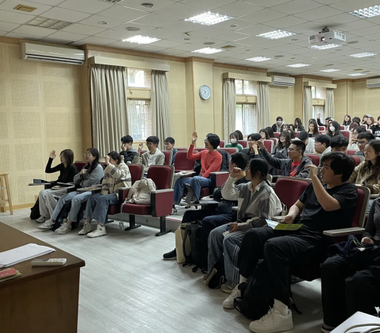

文／洪敬慧
台大新聞所新設「數位新聞領域專長」課程，邀請大學生接觸媒體素養、新聞寫作等實務課程，整合數位敘事能力，製作出數位新聞專題。此領域專長課程，其中兩堂通識課「新聞寫作」、「當代媒體實務講座」於本週五（6）第一次上課。教師劉力仁與詹怡宜都提及，記者見證重大事件的價值。
零壓力通識 學新聞寫作
台大新聞所新開設「數位新聞領域專長」，其中一堂通識課程「新聞寫作」，由《自由時報》生活新聞中心採訪主任劉力仁授課。昨日（6）第一堂課，劉力仁邀請不同學院背景的同學投資一學期的時間，了解新聞業概況，培養發展斜槓可能。劉力仁希望同學不必有負擔，在這堂課從零開始了解媒體的角色與職責。
在台大新聞所任教十五年的劉力仁，過往多教授深度文字報導寫作。他表示，「新聞寫作」課程主要培養基本新聞稿寫作能力，學生在學期中會就政治、環境、經濟等主題，練習在有限時間內，完成八百字短篇新聞稿。
「新聞寫作」課程前兩週，由劉力仁介紹新聞寫作方法、如何發掘題材。第三週起，進入實作階段，學生在課堂就能體驗記者寫稿的工作樣態。
劉力仁也希望讓學生了解新聞業的運作。他指出，記者往往在時間壓力下完成報導，外界有時對記者出錯感訝異，若同學理解新聞產製流程，就能更體會新聞實務的挑戰。劉力仁說，本課程期末會安排分組專題作業，學生將在校園內尋找題材，實際採訪教職員與同學，希望學生體驗記者在採訪過程中的困難。
劉力仁分享自身經歷，他畢業於環境工程學系，卻深耕新聞界幾十載。他遇過非常多優秀記者，大學並非受新聞專科訓練。劉力仁說：「一份報紙就是一個社會的縮影，每個領域都需要新聞人才。」他鼓勵學生善用自身擁有的專業背景，培養對時事的敏感度，長期經營某一路線，就可能成為專業記者。
劉力仁舉例，2011年時，台灣女子高爾夫球選手曾雅妮超過100週，穩坐世界球后寶座。劉力仁有次隨體育線同事參加一場大型記者會，全場一、兩百個記者，曾雅妮一見那名記者，馬上對劉力仁的同事叫出：「趙哥，好久不見！」
劉力仁說，這名體育記者在曾雅妮青少年時期就注意到他，早年跟在曾雅妮身邊大量採訪，成了這名資深記者當下最大的資本。劉力仁說，獲受訪者信任，便有機會拿下獨家新聞。劉力仁說，當記者的意義也包括在現場見證重大事件，「像現在，同業現在都在WBC（世界棒球經典賽）現場啊！」
劉力仁也說，當記者幫助他培養世界觀。他舉例，他曾前往泰柬邊境。有次採訪一個地雷區，劉力仁好奇為什麼這些人不顧腳被炸斷，還堅持住在這裡？透過採訪，他才明白貧窮人的生存之道。最終，他描繪一群窮困人民活在高風險的日常，帶出地緣政治影響下的問題。
劉力仁總結成為新聞記者的特質，要喜歡寫作、好奇、願意和人互動，也要能接受彈性的生活，畢竟有時大事一來，就須徹夜守著寫報導。
當代媒體實務 新聞作為社會溝通
台大新聞所新課程「當代媒體實務講座」於本週五（6）正式上課，授課教師詹怡宜介紹課程規劃，也分享自己從業三十年的新聞工作經驗，帶領同學回顧媒體環境演變，鼓勵同學在快速變動的時代，關心新聞與公共議題。
詹怡宜表示，「當代媒體實務講座」以講座進行，每週邀請不同媒體實務工作者來。之後，講者名單與課程內容陸續在NTU COOL上更新，他建議預先看過講者作品、準備問題，並在課後繳交學習心得。
詹怡宜說，這門課期末將進行分組報告，詹怡宜希望透過分組作業，讓大家學習討論溝通，「因為新聞是一種溝通。」他說，學生可從演講內容延伸出對媒體的觀察，以三到五分鐘影片呈現報告。
詹怡宜一上課便與同學們互動，詢問大家平時看不看新聞？用什麼管道接收新聞？同學多半透過手機、社群平台或新聞網站獲取資訊。詹怡宜說自己是古典的人，現在還會翻報紙。他指出，隨著媒體選擇愈來愈多，人們往往只關注個人有興趣的內容，而大家看的資訊越來越分眾。
詹怡宜也點出，現在出現「新聞迴避」現象，大眾不看新聞。他希望同學在這學期能培養出主動閱讀新聞的習慣，關心公共議題。
談到自身媒體生涯，詹怡宜最初在報社擔任編譯，負責中南美洲新聞。他第一次感受到「自己寫的稿子有人看！」因此踏上新聞之路。
三十年，詹怡宜從記者、主播到管理職，他經歷過老三台時代，一路見證看著台灣變成有線電視台數量世界之冠。他說，2000年起，電視台開始拚收視率，腥羶色新聞鋪天蓋地襲來，當時商業媒體進入瘋狂爆料時代，直到國家通訊傳播委員會（NCC）鼓勵媒體自律、反省。
詹怡宜回溯90年代，當時台灣社會瀰漫著不確定性：政黨輪替能否能夠成真？2000年，陳水扁當選總統，詹怡宜坐在主播台，突然接到一張稿子，寫著：「參謀總長效忠新總統。」那一刻，詹怡宜深深感受到自己正在參與歷史，他一直記得當下，自己發自內心為台灣社會能和平轉移政權開心。
詹怡宜表示，新聞不只傳遞資訊，更是一種與社會溝通的方式。在數位平台與AI技術快速變遷的今天，媒體也想努力跟上轉型速度。即便如此，媒體記錄社會、說故事的精神一如既往重要。詹怡宜期待透過「當代媒體實務講座」課程，啟發同學對現今媒體提出觀察，也思考媒體與社會之間的重要關係。
（更多資訊請參考
台大新聞所網站
）